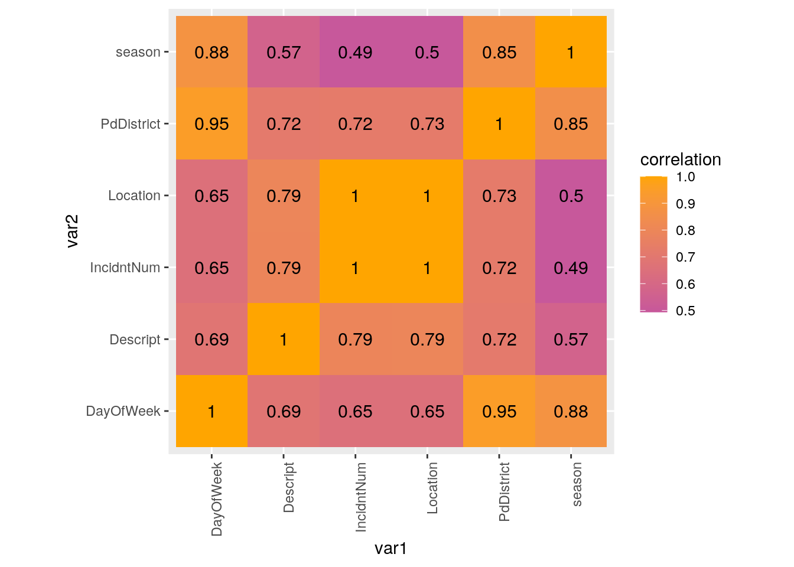
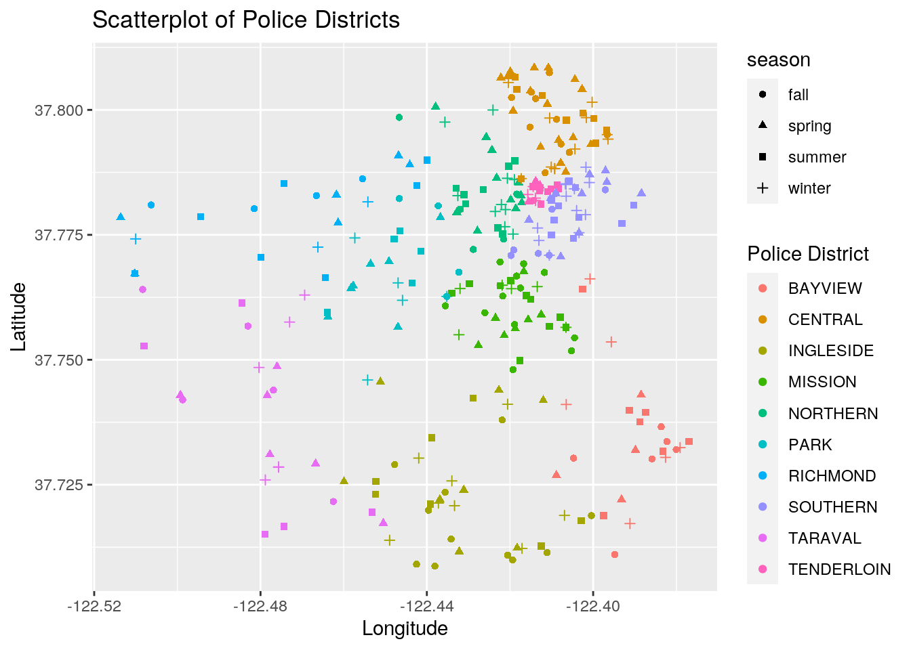
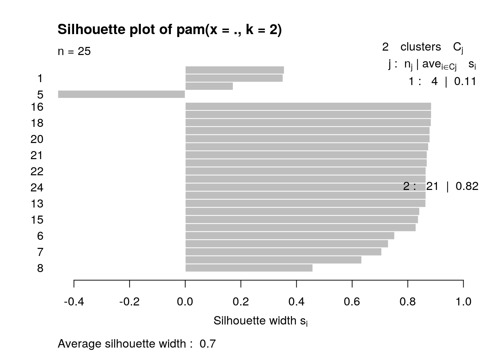

# import tidyverse
library(tidyverse)
# import two datasets and glimpse those
six <- read.csv("/stor/home/yl33656/Police_2016.csv")
glimpse(six)## Rows: 150,500
## Columns: 13
## $ IncidntNum <int> 120058272, 120058272, 141059263, 160013662, 160002740, 160…
## $ Category <fct> WEAPON LAWS, WEAPON LAWS, WARRANTS, NON-CRIMINAL, NON-CRIM…
## $ Descript <fct> "POSS OF PROHIBITED WEAPON", "FIREARM, LOADED, IN VEHICLE,…
## $ DayOfWeek <fct> Friday, Friday, Monday, Tuesday, Friday, Friday, Saturday,…
## $ Date <fct> 01/29/2016 12:00:00 AM, 01/29/2016 12:00:00 AM, 04/25/2016…
## $ Time <fct> 11:00, 11:00, 14:59, 23:50, 00:30, 21:35, 00:04, 01:02, 12…
## $ PdDistrict <fct> SOUTHERN, SOUTHERN, BAYVIEW, TENDERLOIN, MISSION, NORTHERN…
## $ Resolution <fct> "ARREST, BOOKED", "ARREST, BOOKED", "ARREST, BOOKED", "NON…
## $ Address <fct> 800 Block of BRYANT ST, 800 Block of BRYANT ST, KEITH ST /…
## $ X <dbl> -122.4034, -122.4034, -122.3889, -122.4130, -122.4197, -12…
## $ Y <dbl> 37.77542, 37.77542, 37.72998, 37.78579, 37.76505, 37.78802…
## $ Location <fct> "(37.775420706711, -122.403404791479)", "(37.775420706711,…
## $ PdId <dbl> 1.200583e+13, 1.200583e+13, 1.410593e+13, 1.600137e+13, 1.…eight <- read.csv("/stor/home/yl33656/Police_2018.csv")
eight %>% glimpse()## Rows: 150,000
## Columns: 34
## $ Incident.Datetime <fct> 1/21/2018 13:25,…
## $ Incident.Date <fct> 1/21/2018, 10/15…
## $ Incident.Time <fct> 13:25, 12:30, 12…
## $ Incident.Year <int> 2018, 2018, 2018…
## $ Incident.Day.of.Week <fct> Sunday, Monday, …
## $ Report.Datetime <fct> 1/21/2018 13:37,…
## $ Row.ID <dbl> 62639627175, 726…
## $ Incident.ID <int> 626396, 726287, …
## $ Incident.Number <int> 180054759, 18078…
## $ CAD.Number <int> 180211735, 18288…
## $ Report.Type.Code <fct> II, II, II, II, …
## $ Report.Type.Description <fct> Initial, Initial…
## $ Filed.Online <lgl> NA, NA, NA, TRUE…
## $ Incident.Code <int> 27175, 16625, 63…
## $ Incident.Category <fct> "Other Miscellan…
## $ Incident.Subcategory <fct> "Other", "Drug V…
## $ Incident.Description <fct> "Evading a Polic…
## $ Resolution <fct> Open or Active, …
## $ Intersection <fct> FULTON ST \ SCOT…
## $ CNN <dbl> 26055000, 307440…
## $ Police.District <fct> Northern, Tender…
## $ Analysis.Neighborhood <fct> Western Addition…
## $ Supervisor.District <int> 5, 6, 5, NA, 5, …
## $ Latitude <dbl> 37.77707, 37.777…
## $ Longitude <dbl> -122.4365, -122.…
## $ point <fct> "(37.77706807960…
## $ SF.Find.Neighborhoods <int> 23, 21, 25, NA, …
## $ Current.Police.Districts <int> 4, 5, 7, NA, 7, …
## $ Current.Supervisor.Districts <int> 11, 10, 11, NA, …
## $ Analysis.Neighborhoods <int> 39, 36, 3, NA, 1…
## $ HSOC.Zones.as.of.2018.06.05 <int> NA, 1, NA, NA, N…
## $ OWED.Public.Spaces <int> NA, NA, NA, NA, …
## $ Central.Market.Tenderloin.Boundary.Polygon...Updated <int> NA, 1, NA, NA, N…
## $ Parks.Alliance.CPSI..27.TL.sites. <int> NA, NA, NA, NA, …I used two dataset which are San Francisco Crime dataset in 2016-2017 and San Francisco Crime dataset in 2018-2019. They both contains information about the crime in Sanfrancisco. For the 2016 dataset, there are 150,500 rows and 13 columns which are mostly related to category of crimes, descriptions of crimes, locations, police districts, and the time. For the 2018 dataset, there are 223,958 rows and 34 columns, which included almost all of the same columns in 2016 data with different names and some redundant columns which had a lot of NAs in the row. Although the person who uploaded the datasets did not specify the method of gathering those data, but seeing those accurate date and time of the report, I logically assume that the data are from the police departments. They are interesting to me because I heard that despite their high income average, they have huge discrepancy between the rich and the poor, which cause a high crime rates. The potential association would be popularity of the different types of crimes in different police districts because they would have different problems in different areas in San Francisco.
dplyr join function# Because both of the datasets have too many rows,
# I randomly sliced the data for 300 rows each I
# also removed NA
six <- six %>% na.omit() %>% slice_sample(n = 300)
eig <- eight %>% select(2:26) %>% na.omit() %>% slice_sample(n = 300)
# rename the column variables of eig same as six in
# order to use full_join easier
eig <- eig %>% rename(IncidntNum = "Incident.Number",
Category = "Incident.Category", Descript = "Incident.Description",
DayOfWeek = "Incident.Day.of.Week", Date = "Report.Datetime",
PdDistrict = "Police.District", Resolution = "Resolution",
X = "Longitude", Y = "Latitude", Location = "point")
six$Date <- as.Date(six$Date, "%m/%d/%Y")
eig$Date <- as.Date(eig$Date, "%Y/%m/%d %H:%M:%S")
# full_join of six and eig in order to lessen the
# amount of data loss. select the columns that are
# relevant
mergedat <- six %>% full_join(eig) %>% select(IncidntNum,
Category, Descript, DayOfWeek, Date, PdDistrict,
Resolution, X, Y, Location)
# instead of x and y, I changed those into more
# understandable variable names.
mergedat <- mergedat %>% rename(long = "X", lat = "Y")
# separate year, month, and date in order to get
# more numeric columns
mergedat <- mergedat %>% separate("Date", into = c("year",
"month", "date"))
mergedat$year <- as.numeric(mergedat$year)
mergedat$date <- as.numeric(mergedat$date)
mergedat$month <- as.numeric(mergedat$month)
# glimpse the final merged data
glimpse(mergedat)## Rows: 300
## Columns: 12
## $ IncidntNum <int> 160054462, 166088015, 161016942, 160997163, 160520786, 160…
## $ Category <fct> OTHER OFFENSES, NON-CRIMINAL, OTHER OFFENSES, LARCENY/THEF…
## $ Descript <fct> "PROBATION VIOLATION", "LOST PROPERTY", "INCIDENT ON SCHOO…
## $ DayOfWeek <fct> Monday, Sunday, Thursday, Sunday, Saturday, Saturday, Frid…
## $ year <dbl> 2016, 2016, 2016, 2016, 2016, 2016, 2016, 2016, 2016, 2016…
## $ month <dbl> 1, 4, 12, 12, 6, 8, 1, 5, 3, 9, 8, 6, 5, 11, 1, 6, 10, 3, …
## $ date <dbl> 18, 17, 15, 4, 18, 13, 22, 11, 30, 12, 31, 25, 20, 7, 27, …
## $ PdDistrict <fct> PARK, NORTHERN, INGLESIDE, INGLESIDE, NORTHERN, SOUTHERN, …
## $ Resolution <fct> "ARREST, BOOKED", "NONE", "NONE", "NONE", "NONE", "NONE", …
## $ long <dbl> -122.4542, -122.4379, -122.4069, -122.4372, -122.4218, -12…
## $ lat <dbl> 37.74596, 37.80061, 37.71886, 37.72133, 37.77518, 37.78448…
## $ Location <fct> "(37.7459562953856, -122.454239907613)", "(37.800607533158…I used a full join in order to minimize the loss of data. There were originally over 100,000 rows in each dataset and 13 columns for 2016 data, and 34 columns for the 2018 data. However, I realized there are lots of unnecessary columns in 2018 dataset which were not matching with 2016 dataset. Therefore, I decided to drop some columns using select(). By dropping some datasets, the potential problems would be the loss of unique columns by each dataset. I also dicided to randomly choose 300 rows from each data because it took too long to print out outputs when I had the original data, but I made sure choosing the rows ramdomly to see more accurate results.
tidyr functions pivot_longer/gather and/or pivot_wider/spread)# the data is already tidy, therefore, I created a
# new dataset that has a row telling you if the
# crime is resolved or not
yes <- mergedat %>% filter(str_detect(Resolution, "ARREST") |
str_detect(Resolution, "NONE")) %>% mutate(arrest = "yes")
no <- mergedat %>% filter(str_detect(Resolution, "UNFOUNDED") |
str_detect(Resolution, "ACTIVE")) %>% mutate(arrest = "no")
# full join yes and no datasets
yes_no <- yes %>% full_join(no)
# Using pivot wider we can see yes and no values in
# a separate column
yes_no <- yes_no %>% pivot_wider(names_from = "arrest",
values_from = c("IncidntNum"))
yes_no %>% select(yes, no) %>% summarize_all(n_distinct)## # A tibble: 1 x 2
## yes no
## <int> <int>
## 1 296 2Since my datasets are already tidy, I generated a new dataset 'yes_no' which has a categorical row which tells if the criminal is arrested or not. I used pivot_wider in order to see yes and no response in the separate columns. From the new dataset yes_no, we can observe that there are 391 crime cases that are resolved and 207 crime cases are not resolved.
dplyr functions in the service of generating summary statistics (18 pts)
cor() on your numeric variables# Using mutate, I added columns that tells the
# season of the year
mergedat <- mergedat %>% mutate(season = ifelse(month %in%
c(3:5), "spring", ifelse(month %in% c(6:8), "summer",
ifelse(month %in% c(9:11), "fall", ifelse(month %in%
c(12, 1, 2), "winter", "NA")))))
mergedat %>% select(month, season) %>% table()## season
## month fall spring summer winter
## 1 0 0 0 23
## 2 0 0 0 20
## 3 0 28 0 0
## 4 0 25 0 0
## 5 0 27 0 0
## 6 0 0 31 0
## 7 0 0 27 0
## 8 0 0 19 0
## 9 19 0 0 0
## 10 25 0 0 0
## 11 26 0 0 0
## 12 0 0 0 30# Capitalize the character values in Category,
# Descript, PdDistrict, and Resolution in order to
# accurately find the distinct variables
mergedat <- mergedat %>% mutate(Category = toupper(Category),
Descript = toupper(Descript), PdDistrict = toupper(PdDistrict),
Resolution = toupper(Resolution))
# Group by the Police District so that we can see
# which district has the most crimes
mergedat %>% group_by(PdDistrict) %>% summarize_all(n_distinct) %>%
arrange(desc(IncidntNum))## # A tibble: 10 x 13
## PdDistrict IncidntNum Category Descript DayOfWeek year month date
## <chr> <int> <int> <int> <int> <int> <int> <int>
## 1 CENTRAL 47 14 29 7 1 12 25
## 2 SOUTHERN 43 15 25 7 1 12 22
## 3 MISSION 35 17 29 7 1 12 21
## 4 NORTHERN 35 10 21 7 1 12 20
## 5 INGLESIDE 34 14 30 7 1 12 21
## 6 BAYVIEW 23 12 22 6 1 12 15
## 7 TARAVAL 23 9 18 7 1 10 15
## 8 PARK 21 12 19 5 1 11 13
## 9 RICHMOND 20 7 12 6 1 10 16
## 10 TENDERLOIN 18 11 17 6 1 9 12
## # … with 5 more variables: Resolution <int>, long <int>, lat <int>,
## # Location <int>, season <int># Group by the Category of the crime to see which
# category of crime is the most common.
mergedat %>% group_by(Category) %>% summarize_all(n_distinct) %>%
arrange(desc(IncidntNum))## # A tibble: 25 x 13
## Category IncidntNum Descript DayOfWeek year month date PdDistrict
## <chr> <int> <int> <int> <int> <int> <int> <int>
## 1 LARCENY… 85 14 7 1 12 29 10
## 2 NON-CRI… 38 10 7 1 12 22 9
## 3 OTHER O… 38 19 7 1 12 22 9
## 4 VANDALI… 19 3 6 1 10 18 9
## 5 ASSAULT 18 9 7 1 10 15 8
## 6 WARRANTS 14 3 7 1 11 10 9
## 7 VEHICLE… 13 5 5 1 9 11 8
## 8 BURGLARY 11 9 5 1 7 10 6
## 9 SUSPICI… 9 2 6 1 6 6 6
## 10 DRUG/NA… 7 4 5 1 7 6 5
## 11 WEAPON … 7 6 5 1 6 5 6
## 12 MISSING… 6 2 5 1 6 5 4
## 13 SECONDA… 6 3 3 1 5 6 5
## 14 DRIVING… 4 1 3 1 2 4 3
## 15 FRAUD 4 4 3 1 4 4 4
## 16 ROBBERY 4 2 4 1 4 3 4
## 17 TRESPASS 4 2 4 1 4 4 4
## 18 PROSTIT… 3 2 3 1 3 3 3
## 19 DISORDE… 2 2 2 1 2 1 1
## 20 FORGERY… 2 2 2 1 2 2 2
## 21 STOLEN … 2 1 2 1 2 2 2
## 22 ARSON 1 1 1 1 1 1 1
## 23 RECOVER… 1 1 1 1 1 1 1
## 24 RUNAWAY 1 1 1 1 1 1 1
## 25 SEX OFF… 1 1 1 1 1 1 1
## # … with 5 more variables: Resolution <int>, long <int>, lat <int>,
## # Location <int>, season <int>category <- mergedat %>% group_by(Category) %>% summarize_all(n_distinct) %>%
arrange(desc(IncidntNum))
# Group by Police District and Day of Week to see
# the maximum, minimum, variance, average, standard
# deviation, and median of number of crimes.
mergedat %>% group_by(PdDistrict, DayOfWeek) %>% summarize_all(n_distinct) %>%
summarize(max = max(IncidntNum), min = min(IncidntNum),
var = var(IncidntNum), avg = mean(IncidntNum),
sd = sd(IncidntNum), median = median(IncidntNum)) %>%
arrange(desc(PdDistrict))## # A tibble: 10 x 7
## PdDistrict max min var avg sd median
## <chr> <int> <int> <dbl> <dbl> <dbl> <dbl>
## 1 TENDERLOIN 6 1 4 3 2 3
## 2 TARAVAL 6 1 2.90 3.29 1.70 3
## 3 SOUTHERN 11 3 5.81 6.14 2.41 6
## 4 RICHMOND 5 1 2.27 3.33 1.51 3
## 5 PARK 5 3 0.7 4.2 0.837 4
## 6 NORTHERN 8 2 4 5 2 5
## 7 MISSION 12 2 11.7 5 3.42 4
## 8 INGLESIDE 8 1 5.81 4.86 2.41 5
## 9 CENTRAL 10 2 7.90 6.71 2.81 7
## 10 BAYVIEW 8 2 4.97 3.83 2.23 3.5# Count the number of crimes that the criminals are
# arrested.
mergedat %>% filter(str_detect(Resolution, "ARREST")) %>%
summarize(n())## n()
## 1 81# Count the number of crimes that the criminals are
# not arrested or lost.
mergedat %>% filter(str_detect(Resolution, "ACTIVE") |
str_detect(Resolution, "UNFOUNDED")) %>% summarize(n())## n()
## 1 1For the first output, I used mutate() in order to group the month column into four seasons. The result shows that there is the least crime during the fall. The second part was another use of mutate() function in order to capitalize all character values in Category, Descript, PdDistrict, and Resolution which helped me to solve the problem that was caused because dataset in 2016 was capitalized and dataset in 2018 was not capitalized. It was helpful to see the distinct variables of those columns. For the second output, I used group_by for the Police District so that we can see which district has the most crimes. To enhance the visibility, I used arranged(). The result shows that the Southern Police District had the most incidents and categories of crime. Similarly, for the third output, I grouped by the Category of the crime to see which category of crime is the most common. The result shows that the most common category was larceny/theft.
For the fourth outcome, I grouped by police district and day of week in order to see maximum, minimum, variance, average, standard deviation, and median of the number of incidents within the groups. The result shows that in the Southern police district the range between minimum and maximum is the greatest, which is shown by their highest number of variance, and standard deviation. For the last output, I counted the number of cases that the criminals are arrested and the cases are resolved, and I also counted the number of cases that the criminals are not arrested yet or unfounded. The result shows that surprisingly there are more unresolved cases than resolved ones.
Create a correlation heatmap of your numeric variables
Create two effective, polished plots with ggplot
# heatmap selects the numeric variables and then
# selects those which are somewhat relevant.
cormat <- category %>% select_if(is.numeric) %>% select(-long,
-lat, -year, -month, -date, -Resolution) %>% cor(use = "pair")
tidycor <- cormat %>% as.data.frame %>% rownames_to_column("var1") %>%
pivot_longer(-1, names_to = "var2", values_to = "correlation")
# visualize the correlations(plot the heatmap)
tidycor %>% ggplot(aes(var1, var2, fill = correlation)) +
geom_tile() + scale_fill_gradient2(low = "red",
mid = "blue", high = "orange") + geom_text(aes(label = round(correlation,
2)), color = "black", size = 4) + theme(axis.text.x = element_text(angle = 90,
hjust = 1)) + coord_fixed()
## ggplot1 Using longitude and latitude columns, we
## can generally locate which Police Districts are
## located.
mergedat %>% ggplot() + geom_point(aes(x = long, y = lat,
color = PdDistrict, shape = season)) + ggtitle("Scatterplot of Police Districts") +
labs(color = "Police District") + ylab("Latitude") +
xlab("Longitude")
# ggplot2 Group by Police District and day of week
# in order to see general trends of crimes reported
# each day in a week in different police districts.
mergedat %>% group_by(PdDistrict, DayOfWeek) %>% summarize_all(n_distinct) %>%
ggplot(aes(x = DayOfWeek, y = IncidntNum, fill = DayOfWeek)) +
geom_bar(aes(y = IncidntNum), stat = "summary",
fun = mean) + facet_wrap(~PdDistrict) + theme(axis.title.x = element_blank(),
axis.text.x = element_blank(), axis.ticks.x = element_blank()) +
ylab("Number of incidents") + ggtitle("Police District Daily Trend")First of all for the dataset, I used category which I grouped by category from the original dataset(mergedat) in order to get more numerical columns. Then, I made a correlation heatmap of my numeric variables such as the number of Day of week, Descripions, Incident IDs, Locations, and Police District. Although most of my numeric datasets had high correlation to each other, the one thing noticeable was that in terms of group by crime categories, if there are more cases(the number of incident cases) there are higher distinct locations. Moreover, the number of seasons was the least correlated to other numerical variables.
The first plot shows the relationship between the Police districts and the location of the case that was reported with longitude and latitude. I also included a season factor to see in which season the crime occurred. I used longitude as x, latitude as y, police district as a color, and season as shape. The plot was useful to see that generally crime cases reported in the same police district is clustered in similar region. However, there were some exceptions as well. For example, as you can see in the plot, a case in Ingleside region was taken care by northern police district.
The second plot shows the number of incidents in different police district for each day of week. I used the three variables such as police districts as facet wrap, number of incidents as y, day of week as both color and x. The reason I used day of week twice is because there was a limited space for x variables, and I wanted to make my plot look neat. The plot suggests that besides police districts that are out of San Francisco, park district normally has the least criminal cases, whereas Southern district has the most criminal cases. In terms of the day of week, it is hard to see clear relationship between day of week and number of incidents.
Either k-means/PAM clustering or PCA (inclusive "or") should be performed on at least three numeric variables in your dataset
library(cluster)
library(plotly)
# Finding the best number of cluster for my dataset
pam_dat <- category %>% select(IncidntNum, Descript,
Location)
sil_width <- vector()
for (i in 2:10) {
pam_fit <- pam(pam_dat, k = i)
sil_width[i] <- pam_fit$silinfo$avg.width
}
ggplot() + geom_line(aes(x = 1:10, y = sil_width)) +
scale_x_continuous(name = "k", breaks = 1:10)# clustering
final <- category %>% select(IncidntNum, Descript,
Location) %>% scale %>% as.data.frame
pam2 <- final %>% pam(2)
pam2$silinfo$avg.width## [1] 0.7027588plot(pam2, which = 2)
final <- final %>% mutate(cluster = as.factor(pam2$clustering))
# 2-D clustering(number of incidents vs
# descriptions)
ggplot(final, aes(x = IncidntNum, y = Descript, color = cluster)) +
geom_point() + ggtitle("Clustering Analysis") +
xlab("Number of incidents") + ylab("Descriptions")# 3-D clustering
final %>% plot_ly(x = ~IncidntNum, y = ~Descript, z = ~Location,
color = ~cluster, type = "scatter3d", mode = "markers")First of all, I used goodness-of-fit in order to find the best number of clusters for my dataset. The result shows that when it has 2 clusters, it has the highest silhouette width. When I coded silhouette plot of PAM, I got 0.79 for the average silhouette width, which means a strong structure has been found.
For the visualization of the clusters, I visualized two variables(number of incidents and description), but in cluster based on three variables which are number of incidents, descriptions, locations. The plot shows that although cluster 2(blue) shows a pretty positively correlated relationship between the number of incidents and the number of descriptions, cluster 1(red) doesn't show clear relationship between those two variables. For the second visualization, I included all three variables. Both Descriptions vs Location, and the number of incidents vs Description had strong positive correlations for cluster 2, but they did not have strong correlation for the cluster 1. However, for Location vs number of incidents, both of the clusters had strong positively correlated relationship.
Note that the echo = FALSE parameter was added to the code chunk to prevent printing of the R code that generated the plot.
## R version 3.6.1 (2019-07-05)
## Platform: x86_64-pc-linux-gnu (64-bit)
## Running under: Ubuntu 18.04.5 LTS
##
## Matrix products: default
## BLAS: /stor/system/opt/R/R-3.6.1/lib/R/lib/libRblas.so
## LAPACK: /stor/system/opt/R/R-3.6.1/lib/R/lib/libRlapack.so
##
## locale:
## [1] LC_CTYPE=en_US.UTF-8 LC_NUMERIC=C
## [3] LC_TIME=en_US.UTF-8 LC_COLLATE=en_US.UTF-8
## [5] LC_MONETARY=en_US.UTF-8 LC_MESSAGES=en_US.UTF-8
## [7] LC_PAPER=en_US.UTF-8 LC_NAME=C
## [9] LC_ADDRESS=C LC_TELEPHONE=C
## [11] LC_MEASUREMENT=en_US.UTF-8 LC_IDENTIFICATION=C
##
## attached base packages:
## [1] stats graphics grDevices utils datasets methods base
##
## other attached packages:
## [1] plotly_4.9.2.1 cluster_2.1.0 forcats_0.5.0 stringr_1.4.0
## [5] dplyr_1.0.1 purrr_0.3.4 readr_1.3.1 tidyr_1.1.1
## [9] tibble_3.0.3 ggplot2_3.3.2 tidyverse_1.3.0
##
## loaded via a namespace (and not attached):
## [1] tidyselect_1.1.0 xfun_0.19 haven_2.3.1 colorspace_1.4-1
## [5] vctrs_0.3.2 generics_0.0.2 viridisLite_0.3.0 htmltools_0.5.0
## [9] yaml_2.2.1 utf8_1.1.4 blob_1.2.1 rlang_0.4.7
## [13] pillar_1.4.6 glue_1.4.2 withr_2.2.0 DBI_1.1.0
## [17] RColorBrewer_1.1-2 dbplyr_1.4.4 modelr_0.1.8 readxl_1.3.1
## [21] lifecycle_0.2.0 munsell_0.5.0 blogdown_0.20 gtable_0.3.0
## [25] cellranger_1.1.0 rvest_0.3.6 htmlwidgets_1.5.1 evaluate_0.14
## [29] labeling_0.3 knitr_1.29 crosstalk_1.1.0.1 fansi_0.4.1
## [33] broom_0.7.0 Rcpp_1.0.5 scales_1.1.1 backports_1.1.8
## [37] formatR_1.7 jsonlite_1.7.0 farver_2.0.3 fs_1.5.0
## [41] hms_0.5.3 digest_0.6.25 stringi_1.5.3 bookdown_0.20
## [45] grid_3.6.1 cli_2.0.2 tools_3.6.1 magrittr_1.5
## [49] lazyeval_0.2.2 crayon_1.3.4 pkgconfig_2.0.3 ellipsis_0.3.1
## [53] data.table_1.13.0 xml2_1.3.2 reprex_0.3.0 lubridate_1.7.9
## [57] assertthat_0.2.1 rmarkdown_2.5 httr_1.4.2 rstudioapi_0.11
## [61] R6_2.4.1 compiler_3.6.1## [1] "2020-12-07 20:50:50 CST"## sysname
## "Linux"
## release
## "4.15.0-117-generic"
## version
## "#118-Ubuntu SMP Fri Sep 4 20:02:41 UTC 2020"
## nodename
## "educcomp01.ccbb.utexas.edu"
## machine
## "x86_64"
## login
## "unknown"
## user
## "yl33656"
## effective_user
## "yl33656"